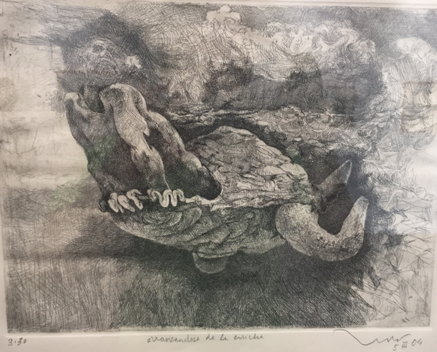

Luis J. Gomez
Postdoctoral Associate, Duke University
Brain Stimulation Engineering Lab
Google Scholar Profile
Email:
luis.gomez@duke.edu
luisgo@umich.edu

Teaching Philosophy
"Low aim, not
failure, is sin"
Benjamin E. Mays
The goal of engineering education is to turn students into creative critical thinkers that will develop technologies that help humanity advance. To succeed in educating students, it is important to:
Promote a positive learning environment: Students should feel: (1) comfortable sharing their problem-solving methodologies, (2) safe mutually analyzing/criticizing each other's approaches, and (3) motivated to learn and explore new ideas. To promote this kind of environment, I will be transparent with students about learning objectives, motivate them to learn, and treat them with respect. I will discuss the 'broader' objectives of the class with my students, provide them with a grading scale that encourages learning, ask them for feedback regarding how they believe the class should be conducted and, within reason, change class specifics to respond to their suggestions. I will learn their names, ask them how they feel about various assignments, communicate to them how they will benefit from the activities, and tell them stories about my own learning.
Emphasize the significance of the course material during course sessions: To do this, I will apply my version of the Kolb cycle. Briefly, when applying the Kolb cycle, the instructor: (1) introduces the material they are about to explain by answering the question 'why?'; (2) expounds the actual material, thus answering the 'what'; (3) illustrates the material's usefulness through an example, thus answering the 'how'; and (4) finally further reinforces the new knowledge by discussing the 'what if?'. I will successfully implement this cycle by: (1) showing a visual of the physical phenomena that will be studied during the lecture and explaining some of the history and/or context of how such discoveries were made, (2) 'teaching' the big idea of the material that needs to be internalized by lecturing, (3) asking the students questions about the material and providing them with time to answer alone, discuss with peers, and re-answer the questions, and (4) exploring weaknesses in the idea or discussing how it can be used in more applied settings. My modification to the Kolb cycle is that after step (3), I plan to go back to step (2) and reteach the material in order to clear up any misinterpretations that appear during the group activities.
Tailor the assignments to develop both student's problem-solving and critical thinking skills: To develop problem-solving skills, my assignments will have three kinds of exercises: one-step, guided-multi-step, and multi-step exercises. One-step exercises involve identifying key variables in a word problem and applying a formula and are designed to help students become comfortable with the notation. Guided-multi-step exercises start with a multi-step question followed by a series of one-step questions, which lead the students to answer the multi-step question. These exercises are designed to give students an example of how to approach more 'open-ended problems'. Multi-step exercises have the same types of questions as the guided multi-step ones; however, a strategy is not provided. To develop their critical thinking skills, I will ask questions like, is there a more effective way to solve the multi-step word problem and why it is more effective. Furthermore, I will have them work through a guided multi-step problem using two different approaches and have them compare the two approaches to the solution. For class projects, I will give them assignments in which there is clearly more than one correct way to arrive at a solution and have them write about why they chose their specific approach.
Ensure that student assessment encourages students to continue learning: Engineering students are highly heterogeneous, that is, individual students enter with different preferred learning styles with any number of extracurricular responsibilities, different amounts of background knowledge of the subject, and at various stages of intellectual development. Ideally, students would study a given material until a prescribed aptitude is achieved and then move on to the next subject. However, because of time constraints, a grade that represents how much of the material was mastered must be given at the end of the term, and unfortunately, in our culture, a person's grade is mistakenly equated with his/her talent. As a result, gifted engineering students are often quick to quit or end up with a diminished self-image following their education. To avoid this, I will remind students that the final grade measures readiness for future classes and not necessarily ability. I will also use student performance during assignments to determine which topics need to be further discussed in class.
Independent of their stage of intellectual development, students ought to be challenged by their education. As a professor, I want to 'teach' students to embrace that challenge so that they can find the will to overcome obstacles in their learning. When they leave my class, they will ideally internalize the quote on the top of this passage and ultimately become creative critical engineers.
Luis Gomez
Relevant Experience:
Graduate Student Instructor (GSI): During the winter of 2014, I was a GSI for Electrical Circuits, Systems, and Applications, an electrical engineering course for non-electrical engineering majors. The class had more than 200 students from a number of fields, and I was responsible for four lab sections, each of which had 17-18 students. Before each lab, I would prepare by conducting the lab and grading lab reports to identify possible difficulties the students might have. On the day of each lab, I would write explanations of concepts that they might not understand from the previous lab on the blackboard and give them a brief lecture (3-5 minutes) outlining lab procedures, pointing out pitfalls, and explaining the purpose of each lab subsection. Then, they would start working while I walked around the room giving feedback about the previous lab report and answering any questions that they had about the current lab. I also tried to make myself available outside of the lab and met with students when they requested. Overall, I received positive evaluations from the students, and I was awarded the Outstanding GSI Award from the department (given to the top electrical engineering GSI each term). Some of the students� comments included:
1. "Luis was one of the best GSI's I've had at U of M. He helped me get through confusing parts of the labs, he was understanding of issues with lab work, and he was brilliant with the subject matter and made learning the material very easy. The lab experience would have been a much more difficult experience without his assistance."
2. "Luis was great. Every time anyone had a question and called out his name, he would jump up to help immediately and was extremely helpful. He would always help explain concepts and results we were getting in labs and always made himself available for any extra help required."
Engineering Teaching Class: I received formal training in Engineering Teaching from a semester-long 3-credit graduate course. In this class, we critically discussed various learning styles, teaching styles, and engineering teaching paradigms. More importantly, we learned how to successfully incorporate various teaching methods (e.g. collaborative learning) into our lessons. For this class, I was required to prepare a syllabus, a course outline, a lecture, a mid-term design project, and an exam for a special topics class on Computational Electromagnetism.
Tutoring: As an undergraduate, I worked as a tutor for my university's tutoring center. I held both private and 'walk in' tutoring sessions for various courses, including Circuits 2, Signals and Systems, Linear Algebra, Calculus 3, Advanced Calculus, Numbers and Polynomials, Digital Logic, and Physics 1 and 2.
Teaching Interests: I'm interested in teaching classes related to electromagnetism, optics, numerical methods, PDE/Integral Equations, or Bio-electromagnetism.
Last updated 12/11/14

luis.gomez@duke.edu
luisgo@umich.edu
|
Last updated 12/11/14